01
Sown in silt
As the pre-monsoon rains arrive, jute is sown across the alluvial floodplains of the Ganges–Brahmaputra delta. In Bengal it is simply pāṭ.
Signature Ethos · Direct Exporter (IEC AUJPG7653C)
“Every weave has a story.”
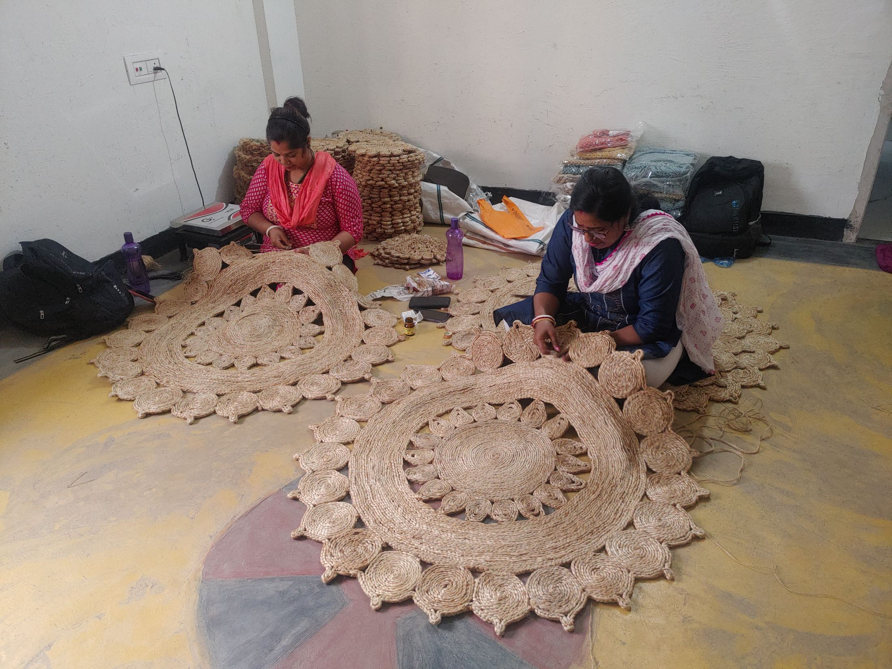
Pāṭ — jute. Sown in the silt of the Ganges delta, hand-crocheted by 63++ women artisans across Howrah and Hooghly, exported worldwide, and returned cleanly to the soil.
Chapter I · One season of jute, from silt to strand
01
As the pre-monsoon rains arrive, jute is sown across the alluvial floodplains of the Ganges–Brahmaputra delta. In Bengal it is simply pāṭ.
02
Figures as widely cited for one growing season; its fallen leaves return to the field as green manure.
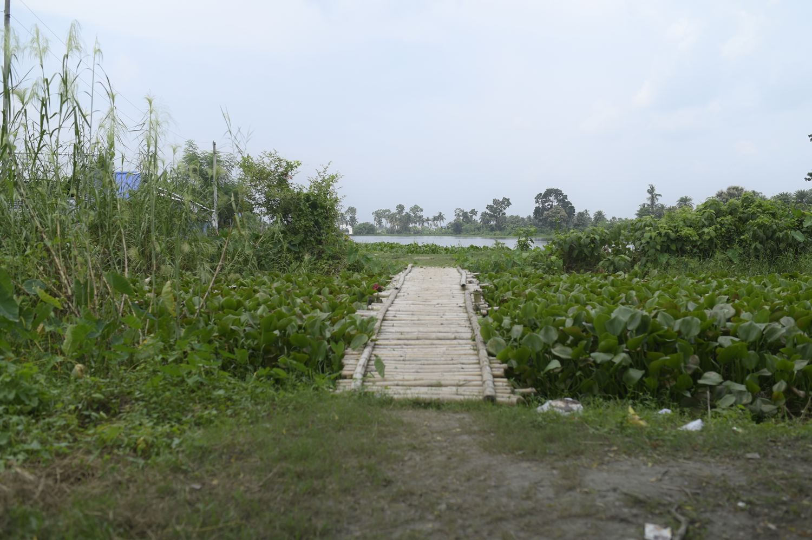
03
Cut stalks are sunk in still village ponds for two to three weeks. Native microbes loosen the bark. No solvent, no furnace — only water, time and patience.
04
Stripped by hand, washed and sun-dried, the fibre takes on its lustre: cellulose and lignin, grown rather than refined.
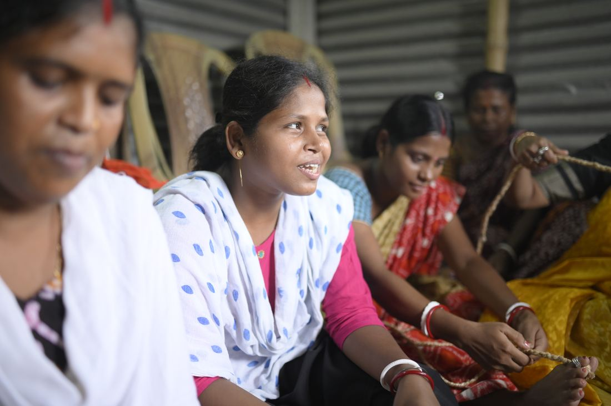
05
Three plies, two hands, unbroken tension — the foundation for our signature crochet bags, structured totes, and sculpted home décor accents.
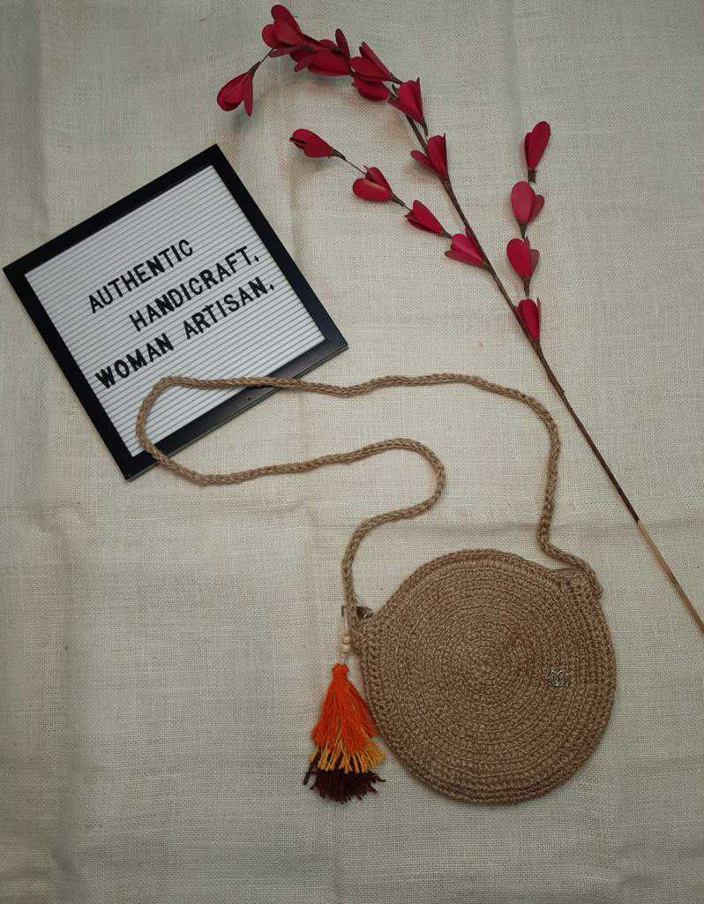
06
Every offcut is twisted back into twine, trims and tassels. In true zero-waste ecology, our agricultural cycle leaves zero residue: the tender, antioxidant-rich leaves of the jute plant become Amata Moroheiya Infusion — a nourishing botanical tea. From leaf to stalk to finished crochet bag, nothing is discarded.
Ploceus philippinus — The Baya Weaver (Babui Pakhi), our brand mascot and animal soul. Master architects who weave zero-waste suspended nests without adhesives.
Chapter II · Animal Soul & Biomimicry
Rajanikanta Sen · স্বাধীনতার সুখ (Swadhinatar Sukh — The Joy of Independence)বাবুই পাখিরে ডাকি, বলিছে চড়াই, Babui pakhire daki, boliche chorai, Calling to the weaver bird, the sparrow boasts,“কুঁড়ে ঘরে থেকে কর শিল্পের বড়াই, “Kure ghore theke koro shilper borai, “Living in a straw hut, you pride yourself on craft;আমি থাকি মহাসুখে অট্টালিকা ’পরে, Ami thaki mohashukhe ottalika ’pore, I dwell in grand comfort atop a mansion wall,তুমি কত কষ্ট পাও রোদ, বৃষ্টি, ঝড়ে।” Tumi koto koshto pao rod, brishti, jhore.” While you endure the harsh sun, rain, and storm.”বাবুই হাসিয়া কহে, “সন্দেহ কি তায়? Babui hashiya kohe, “Shondeho ki tay? The weaver smiles and replies, “Is there any doubt?কষ্ট পাই, তবু থাকি নিজের বাসায়। Koshto pai, tobu thaki nijer bashay. I bear the hardship, yet I live in my own home.পাকা হোক, তবু ভাই, পরের ও বাসা, Paka hok, tobu bhai, porer o basha, Brick-built it may be, brother, yet it belongs to another;নিজ হাতে গড়া মোর কাঁচা ঘর, খাসা।” Nij hate gora mor kancha ghor, khasha.” My humble home, woven by my own hands, is splendid.”
Every offcut becomes twine and tassels; tender plant leaves yield Amata Moroheiya Infusion.
No synthetic glue or stiffeners. Every crochet bag and décor piece keeps its form through interlocking knot tension.
When its long life ends, the piece dissolves into fertile soil humus in 45 days. Complete ecological closure.
Chapter III · How We Create · Howrah & Hooghly
63++
Master Custodians Across Howrah & Hooghly · Still Growing
Rural women across the courtyards of Howrah and Hooghly form the living heartbeat of our collective. Not anonymous labour — but a thriving sisterhood of master artisans crafting export-grade luxury with financial sovereignty and creative pride.
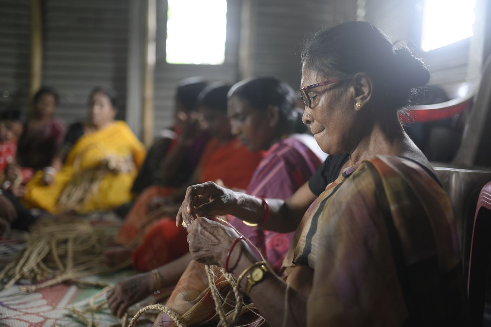
For decades, rural craftswomen were treated as silent hands at the end of exploitative middlemen chains. Divulge was born to flip that reality on its head. We began around a single village veranda in Howrah and expanded across Hooghly; today, over 63 master craftswomen — and an ever-expanding circle — earn dignified fair-living wages, work flexibly from their ancestral homes, and pass on generational wisdom with pride.
Every bag carries the warmth of afternoon laughter, shared Bengali songs, and export-calibrated crochet precision. Here, when a woman picks up the crochet needle, she doesn't just craft sustainable luxury — she opens her first independent savings account, funds her daughters’ schooling, and commands honor in her household. Every stitch proves our promise: Every weave has a story.
“When I hold the golden strand, I am no longer invisible. I am creating heirlooms that journey to living rooms and boutiques across Mumbai, London, Berlin, and New York, carrying our dignity and our villages’ name to the world.”
Export Catalog · Handmade in Howrah & Hooghly · Every Weave Has a Story
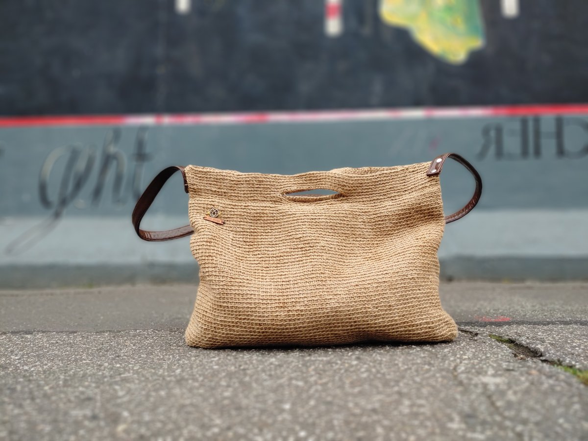
Fine-gauge hand-crocheted golden strand with reinforced saddle leather straps, integrated slot handle, and handcrafted metallic Divulge pin.
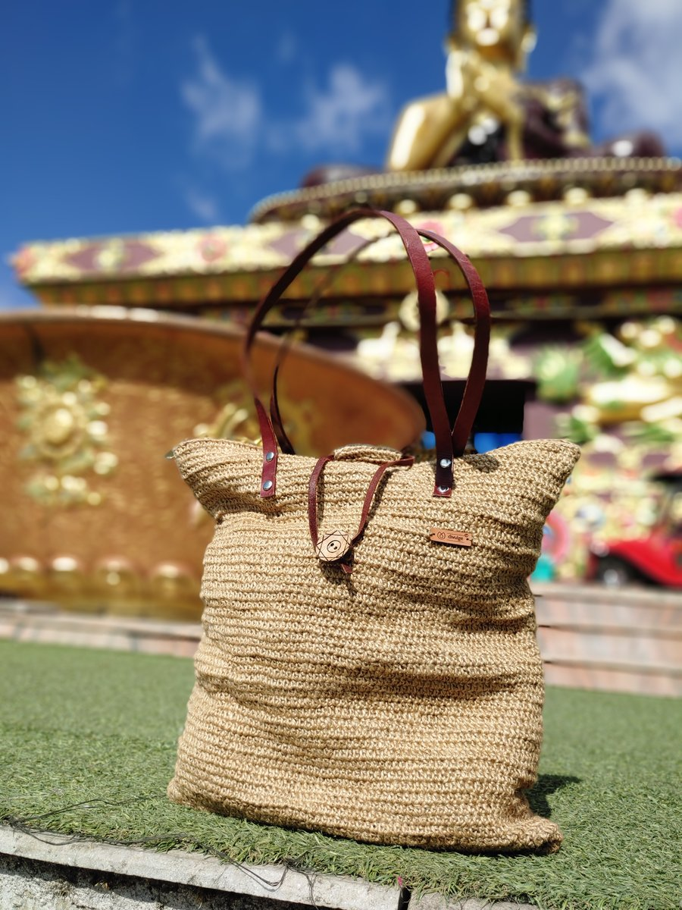
Heavy-duty vertical crochet silhouette with twin riveted leather handles, drawstring cinch security, and engraved wooden heritage emblem.
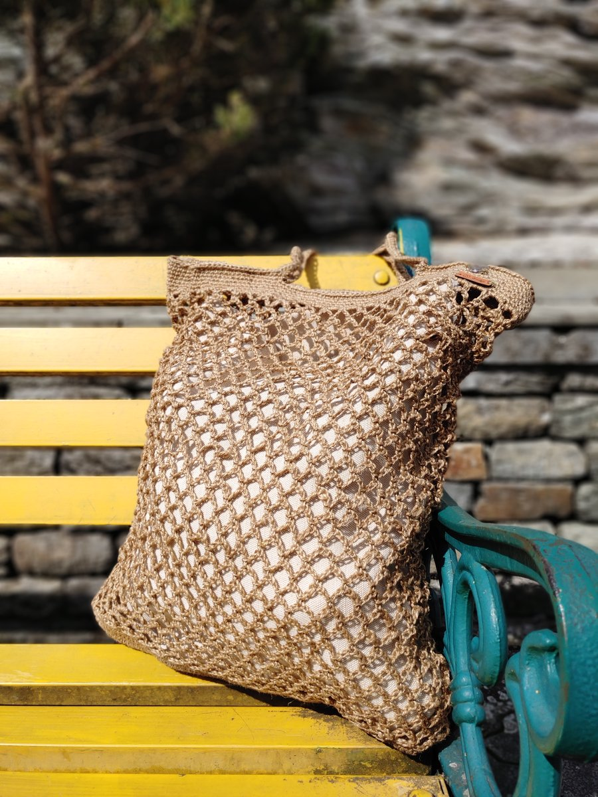
Breathable openwork diamond crochet mesh paired with an unbleached organic cotton inner lining — featherlight bohemian appeal for global lifestyle boutiques.
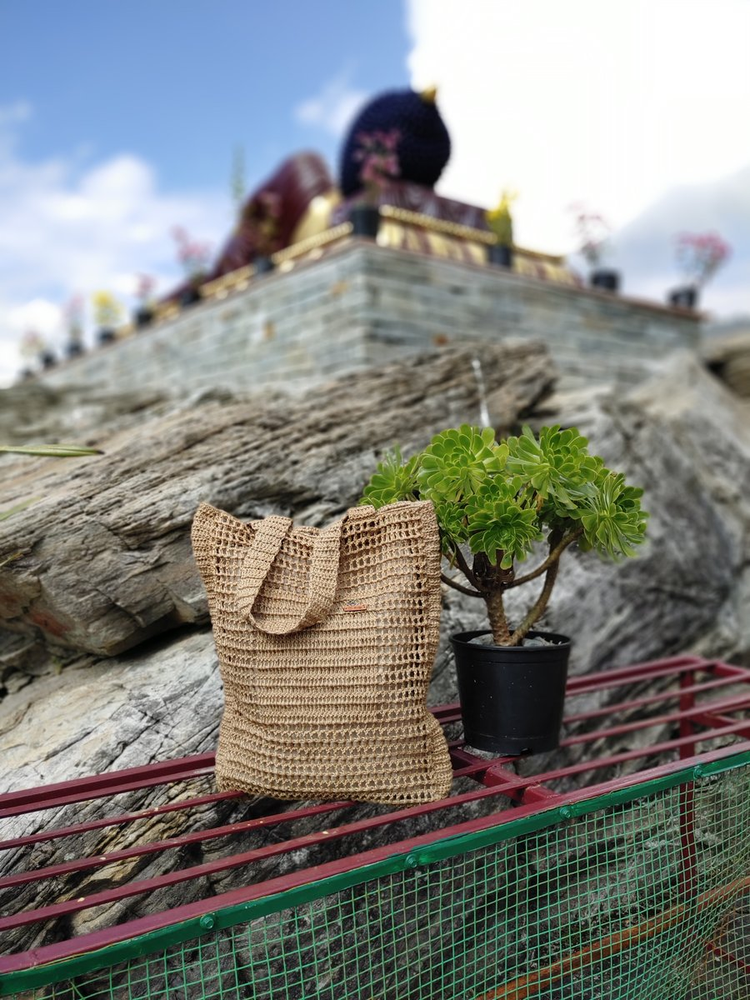
Multi-texture hand-crochet construction with integrated self-yarn handles and ventilating openwork borders, built for organic grocers and eco-retailers.
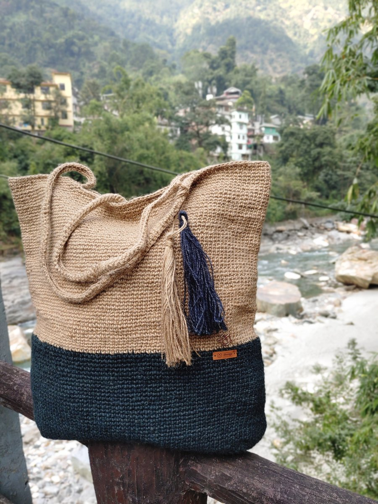
Natural golden jute hand-crocheted over an AZO-free indigo contrast base, finished with a bicolour artisan tassel and custom-branded wooden tag.
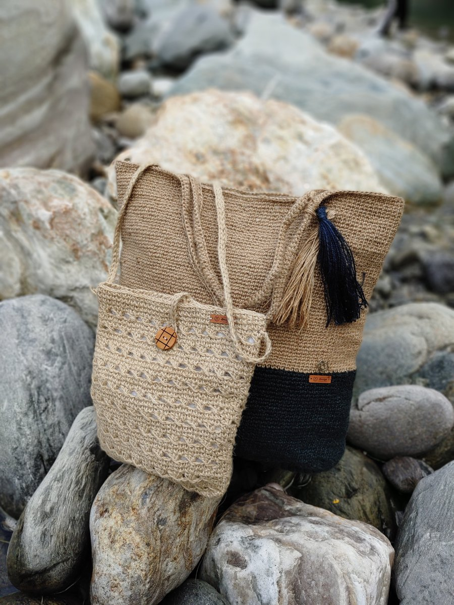
Curated retail & corporate gifting duo pairing our two-tone shoulder tote with the textured crossbody pouch and carved coconut-shell button closure.
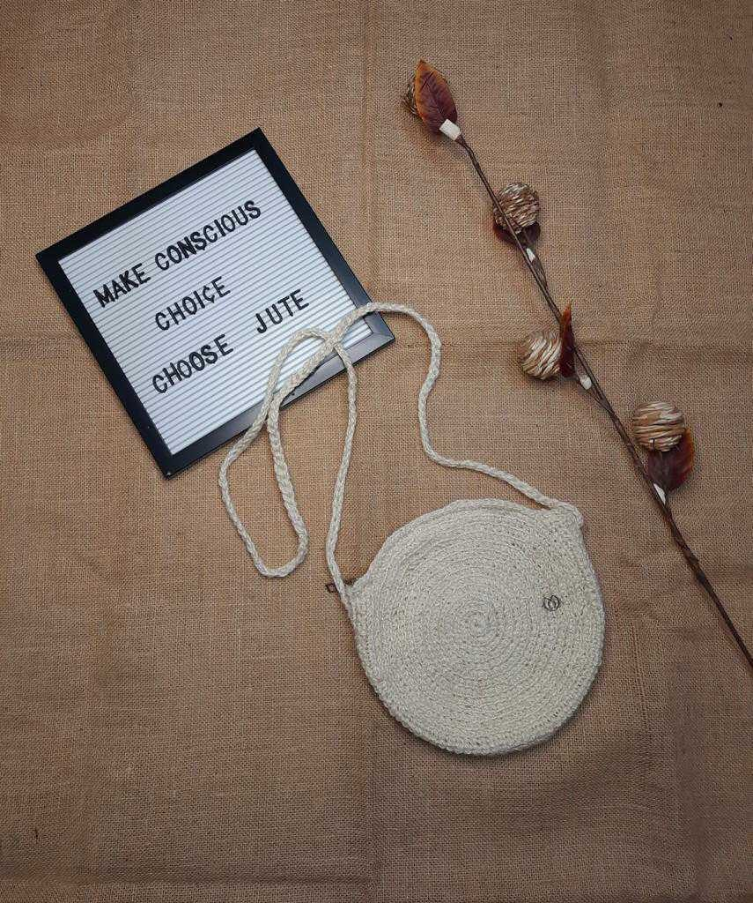
Iconic spiral-crocheted silhouette with braided strap, zippered cotton interior, and solid metallic Divulge emblem — lightweight statement luxury.
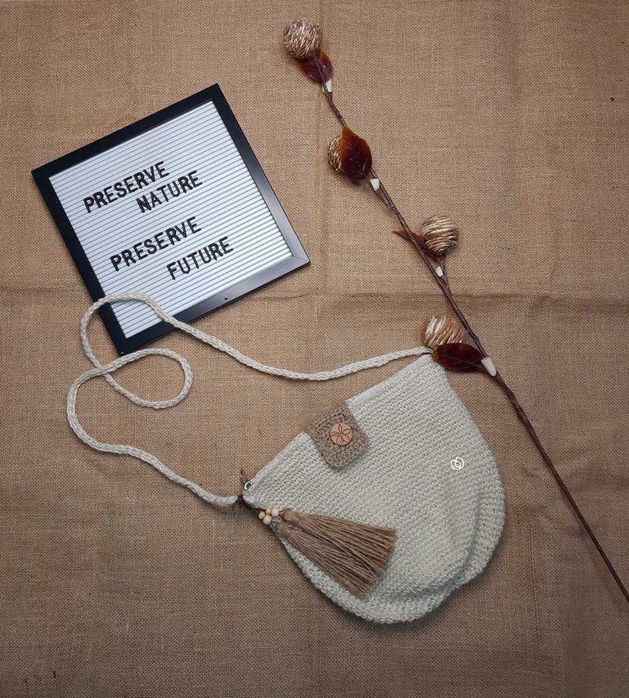
Soft ivory-washed fine-gauge crochet crossbody with carved floral coconut button closure, braided strap, recessed zipper, and wooden-bead tassel.
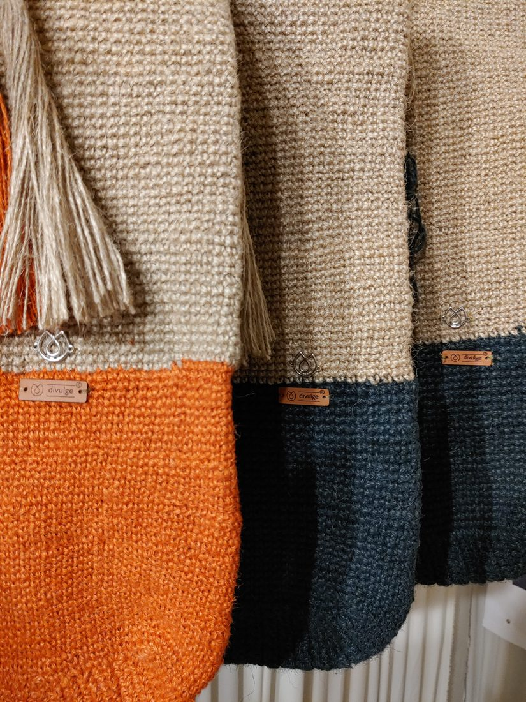
Available in terracotta, deep charcoal, and custom brand palettes — featuring laser-engraved wooden badges, metallic logos, and matching hand-knotted tassels.
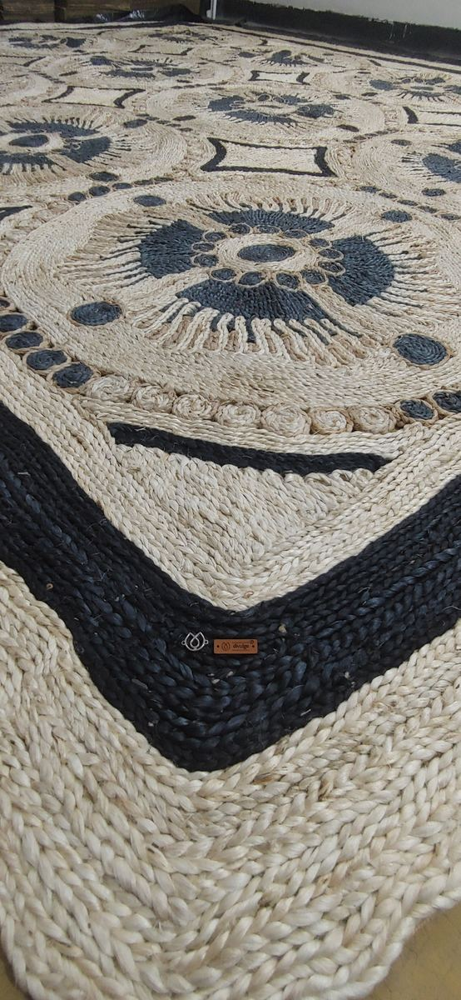
Architectural interior centrepiece braided entirely by hand in Howrah & Hooghly — combining raw golden strands and indigo borders for luxury hospitality and homes.
Lotus-scalloped circular floor rug coiled and hand-sewn from thick golden jute braids — engineered without synthetic backing for resorts, spas, and boutique living rooms.
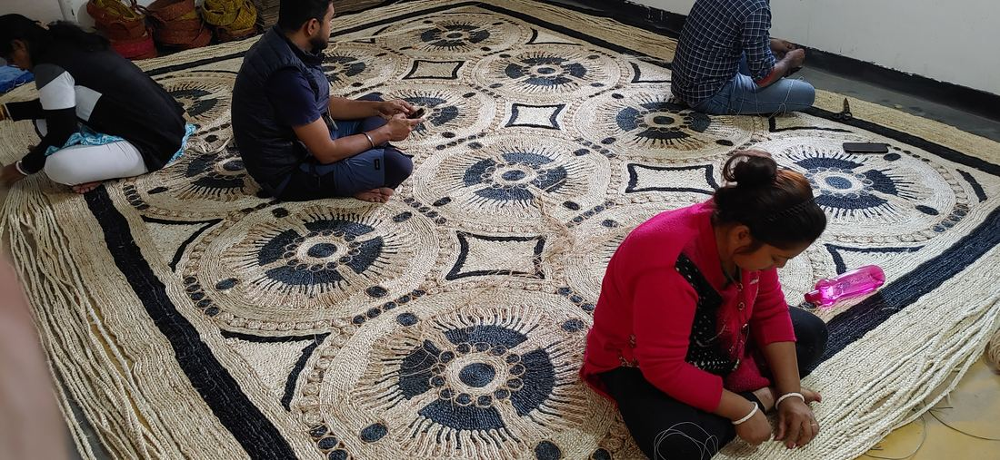
Monumental room-scale jute installation blending raw natural coils with vegetable-indigo geometry — custom-commissioned for architecture studios, flagship retail, and hospitality.
Global B2B & Private Label · Direct Manufacturer-Exporter
Engineered for global fashion labels, supermarket chains, luxury hospitality, and sustainable brands. We unite the heritage of 63++ Howrah & Hooghly master artisans with commercial export precision — zero middlemen, manufacturer-direct wholesale pricing, and world-class finish.
Direct production across Howrah and Hooghly craft clusters eliminates broker markups. From 100-piece boutique capsules to container-scale bulk export runs, every piece undergoes strict tensile, gauge, and stitch inspection.
Full customization over dimensions, gussets, GSM weight, jute/juco/cotton blends, handle styles (braided, cotton-webbed, cane, saddle leather), AZO-free custom dyeing, embossed wood/leather tags, and screen/foil branding.
DGFT Export Certified (IEC AUJPG7653C), National Jute Board JDP Registered, Jute Corporation of India Empanelled, MSME Udyam, GST Verified, and Trademark Registered — aligned with European & US eco-standards.
Rapid prototype sample dispatch before bulk commitment. Dedicated air & sea export logistics from Kolkata Port (FOB / CIF) serving Germany, UK, France, USA, Canada, Australia, UAE, and Japan.
Chapter IV
0/ 45 days
Jute · plant cellulose
Fresh burial
A finished jute weave rests on moist loam. The fibre network is intact.
0% biodegraded
Polypropylene · "eco" bag
Petrochemical lock
Polymer chains offer soil microbes nothing to digest. The surface stays sealed.
0% biodegraded
Indicative timeline for untreated jute in warm, moist, living soil; real rates vary with climate and weave. Polypropylene does not biodegrade on this timescale — it fragments.
The ecological ledger
| Parameter · 1–10 | Jute | Plastic |
|---|---|---|
| Initial cost benefit | 3 | 8 |
| Societal value | 8 | 2 |
| Ecological value | 10 | 1 |
| Disposal & clean-up | 8 | 2 |
| Ethical value | 10 | 1 |
| Weighted index | 7.8 | 4.2 |
Source: Divulge research brief, Ecological Economics of Jute.
Chapter V · Global Exhibitions, Trade & Inquiry
Rooted in heritage, built for global trade. Shaped by mentorship with Padma Bhushan design visionary Rajiv Sethi of the Asian Heritage Foundation, Divulge carries Bengal’s finest golden craft from Howrah & Hooghly into international trade expos, luxury retail chains, and design museums worldwide — proving every weave has a story.
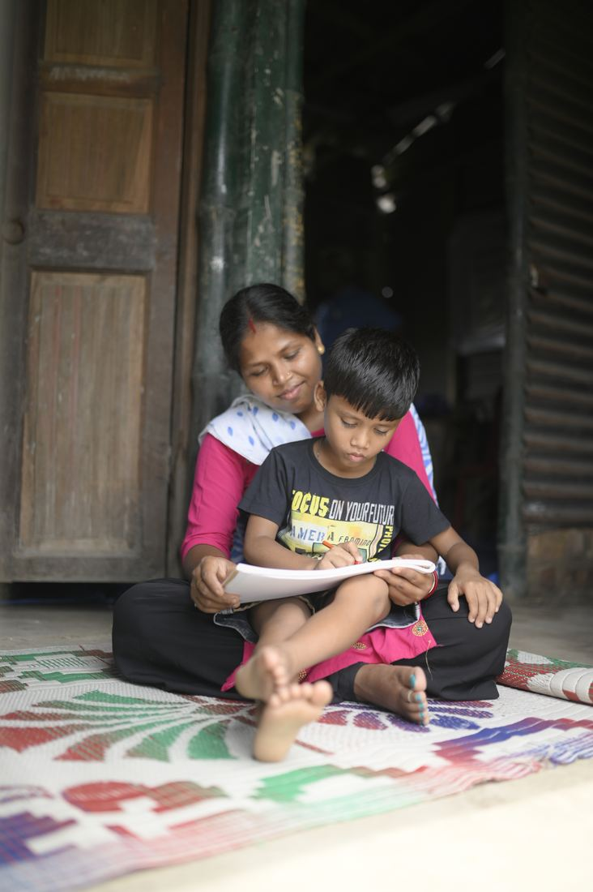
2021 · Genesis
Enterprise incorporation, registered trademark & founding Howrah artisan circle
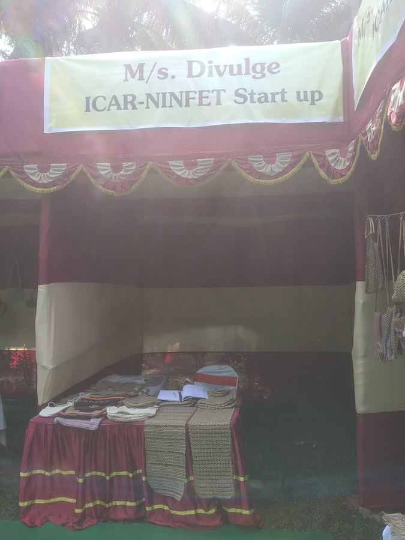
Mar 2022 · Research Incubation
ICAR-NINFET startup pavilion & natural fibre research incubation in Kolkata
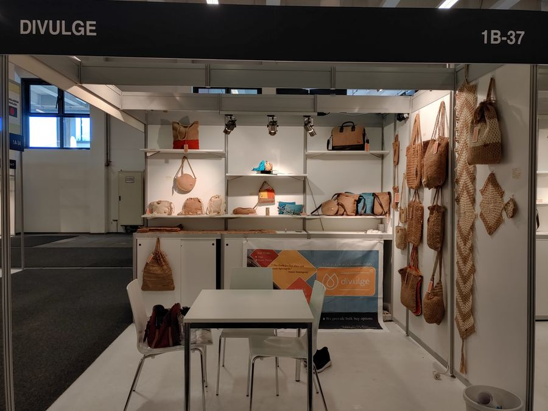
Jul 2022 · 1st International Expo · Berlin
Messe Berlin, Stand 1B-37 — our landmark first international exposition in Europe, opening the doorstep to global export markets
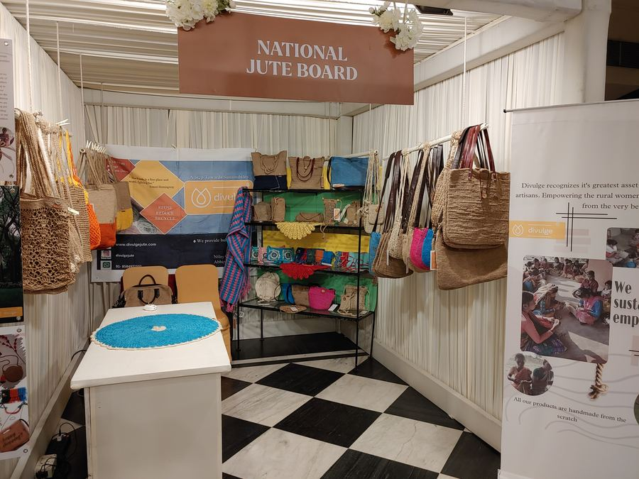
Aug 2022 · Premier Domestic Exhibition
National Jute Board Central Pavilion, Kolkata — a flagship domestic showcase celebrating Divulge among India’s finest contemporary jute innovators
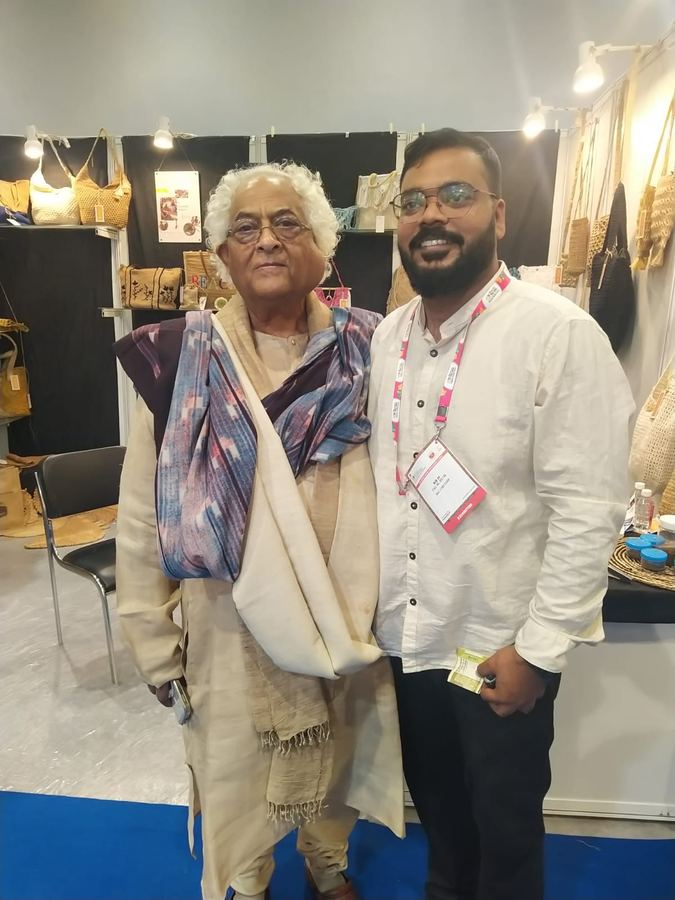
Feb 2024 · Mentorship & Expansion
Cultural dialogue & residence mentorship with Padma Bhushan Rajiv Sethi as our Howrah & Hooghly collective expands
2025–2026 · Global Export Authority
DGFT Export Certified & NJB JDP Registered — 63++ artisans delivering to 275,000+ conscious patrons worldwide
Patron & Mentor · An Archival Milestone
“When renowned cultural curator, scenographer, and Padma Bhushan design visionary Rajiv Sethi of the Asian Heritage Foundation encountered Divulge, he was so profoundly moved by the craftsmanship and quiet dignity of our women artisans that he personally invited the Divulge team to his private residence for lunch.”
His mentorship continues to illuminate our curatorial and export journey — confirming that Bengal’s living craft belongs on the world’s most distinguished cultural platforms, boutiques, and thoughtful living spaces.
Trade, Sourcing & Craft Answers
Divulge Living unites direct artisan cluster manufacturing across Howrah and Hooghly, West Bengal (63++ master women artisans) with verified global export licenses — including DGFT IEC (AUJPG7653C), National Jute Board JDP registration, and JCI empanelment. Following our landmark first international expo at Messe Berlin (Stand 1B-37) and over 275,000+ creations carried globally, we offer zero-middleman export pricing, boutique-to-bulk scalability, and 100% plastic-free biodegradable craft.
Yes. We manufacture custom OEM and private-label crochet totes, juco bags, promotional shopping bags, corporate gift kits, and braided home décor. Buyers can tailor bag dimensions, gussets, GSM weight, handles (braided jute, cotton webbing, saddle leather, cane), AZO-free natural dyeing, embossed wooden or leather tags, custom metal logo pins, and eco-packaging.
We support agile capsule wholesale orders starting from an MOQ of 100 pieces per design as well as container-scale export volumes. Custom prototype samples are dispatched worldwide prior to production, with a guaranteed 24-hour export quote turnaround via info@divulge-living.com and FOB Kolkata / CIF air and sea freight worldwide.
Divulge is DGFT Export Certified (IEC AUJPG7653C), registered with the National Jute Board (NJB-09-JDP-20022025-951), empanelled by the Jute Corporation of India (JCI), MSME Udyam certified (UDYAM-WB-10-0013953), GST verified (19AUJPG7653C1ZJ), and Trademark registered (No. 2909685). All crafts use AZO-free dyes and zero synthetic plastic stiffeners.
Our rural crocheting and braiding clusters operate across Amraberia, Howrah and Hooghly, West Bengal — the historic heartland of Bengal’s golden jute belt — supported by commercial export dispatch from Kolkata, India.
Every cutting remnant is hand-twisted into trims and tassels, while sister venture Amata harvests the plant’s tender leaves for organic Moroheiya prebiotic herbal infusions. Free of petrochemical coatings, untreated jute dissolves back into fertile soil humus in around 45 days.
Contact Us · Export & Trade Desk
✓ Inquiry Recorded
Our export desk will respond within 24 hours with pricing, sampling options, and lead times.
Guardians of the Strand · Leadership & Vision
Bridging generational Howrah & Hooghly craft with global sustainable commerce. Divulge Living is steered by founders dedicated to radical artisan dignity, circular zero-waste ecology, and elevating handcrafted jute worldwide.
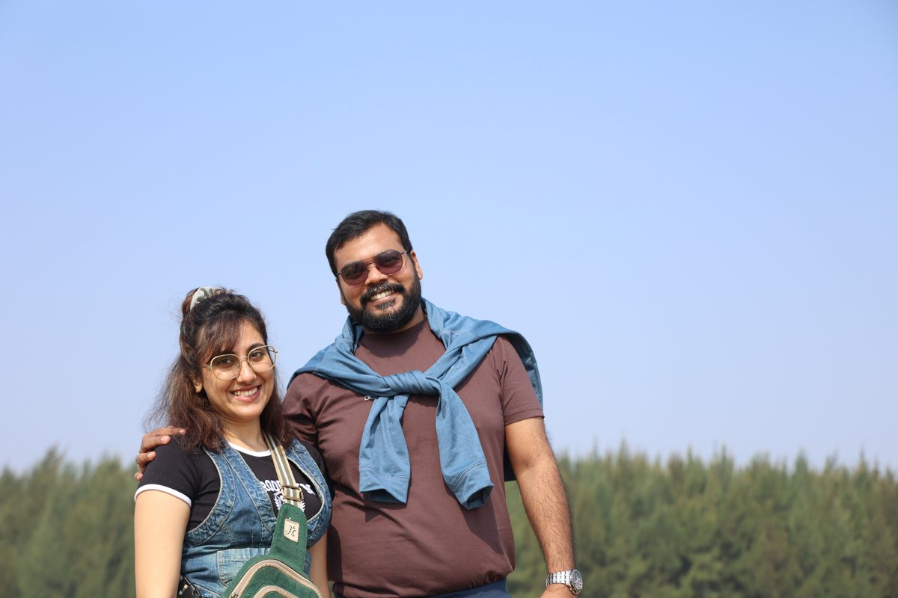
Founder & Managing Director
Merchant Navy Officer Turned Eco-Entrepreneur
A former navigating officer with British Petroleum who sailed global trade routes, Nilay returned to his ancestral Bengal with a bold mission: to rescue the "Golden Strand" from coarse packaging and establish it as an export-grade luxury material.
Under his leadership, Divulge built fair-living wage standards across 63++ Howrah & Hooghly craftswomen, debuted internationally at Messe Berlin, and secured mentorship with Padma Bhushan Rajiv Sethi.
Co-Founder & Head of Strategy
Global Exports, Supply Chain & Artisan Partnerships
Kanika leads international business development, export strategy, and artisan cluster integration across Howrah and Hooghly. Her focus ensures rural craftswomen access high-value global consumer markets without exploitative intermediaries.
She orchestrates wholesale partnerships, custom OEM collaborations, and design innovation across Divulge’s handcrafted crochet bag and home décor collections.
Co-Founder & Head of Research
Biomimetic Innovation, Sustainable Materials & Scientific Direction
Dr. Abhipriya Chatterjee brings deep academic rigor, biomimetic perspective, and sustainable materials research to Divulge Living. Her work explores the scientific potential of natural bast fibres and circular zero-waste processing.
She bridges scientific inquiry with Bengal’s indigenous artisanal traditions, stewarding research-backed eco-friendly alternatives and aligning artisanal hand-knotting with global environmental standards.
Sister Enterprise & Circular Agriculture
Together, the leadership also guides Amata (amata.in) — a wellness venture pioneering certified organic prebiotic Moroheiya jute leaf infusions. While Divulge weaves the plant’s strong golden stems into heirloom crochet bags and home décor, Amata harvests the nutrient-packed leaves for botanical teas — realizing a 100% whole-plant, zero-waste agricultural paradigm.
Divulge Living Studio & Leadership
Send an enquiry simultaneously to both leadership numbers or chat individually with our Studio or Head of Strategy:
Logs inquiry & opens instant WhatsApp communication.